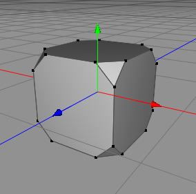
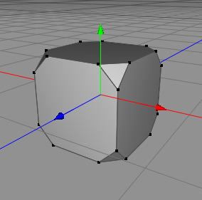

ベベル ツール
ベベル ツールは、使用可能で最も基本的なポリゴンツールの一つです。ポリゴンメッシュの細部を作り込みたい場合に、とても役立つでしょう。それぞれの編集モードで、ベベル ツールで何が出来るのかを、下の図で確認してください。
編集モード
ベベル ツールは、ポリゴンモード、エッジモード、ポイントモード のローポリゴンオブジェクトにのみ適用する事ができます。
-

選択ポイントにベベル ツールを実行には、3D ビュー でクリックします。左右にマウスをドラッグして、ベベルの強さを調整する事ができます。マウスを離して、作業を完了します。-
ある状況では、ポリゴンが重なって生成される可能性がある事に注意してください。
 

ベベル実行前と後 -
-

ポイントモードと同じように使います。
ベベル実行前と後 -

ポイントモードと同じように使います。
ベベル実行前と後
補助キー
-
- なし
プロパティ
- 分割数: このプロパティで、ベベルがどれくらいの部分に分割されるかを決定します。
- クォンタイズ: もし連続的にベベルを調整したい場合、このプロパティを 0 にセットします。反対に、この値はベベル半径のクォンタイズを定義します。